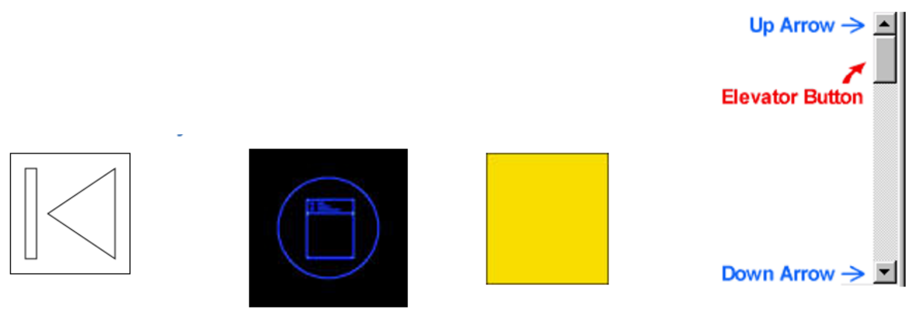

# Lab - Usability and User Experience
Lab exercises to help you master the subject material and to complement the lecture material for Introduction to Interaction Design (F27ID).
# Activity
We are surrounded by designs. Designs that inspire us and designs that frustrate us.
## Activity: Wall of Shame
* Make a list of interfaces that drive you crazy
* Write your list with the worst interfaces at the top
---
# Virtual Affordances
* Take a look at the image below (shows some simple interface objects) - how do the objects afford?
* What if you were a novice user?
* Would you intuitively know how to use the interface options?

----